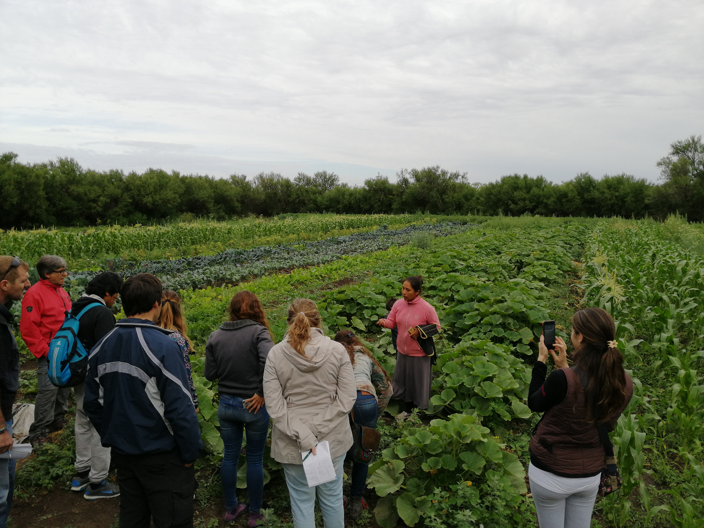

Sobre mí
Mi interés por la Tecnicatura en Desarrollo Web surge de mi curiosidad por comprender cómo funcionan las aplicaciones y las tecnologías que utilizamos diariamente. Me motiva la posibilidad de crear soluciones digitales que puedan resolver problemas reales y generar un impacto positivo en las personas.
Durante mi proceso de formación descubrí un especial interés por el desarrollo de software y el aprendizaje constante de nuevas tecnologías. Considero que esta tecnicatura me permite combinar la creatividad con el pensamiento lógico para diseñar y desarrollar aplicaciones cada vez más completas.
Mis intereses tecnológicos
Algunas de las tecnologías que me interesa aprender y profundizar son:
- Java/SpringBoot
- Python
- QGIS
- JavaScript
- HTML5
- CSS3
- React/Angular
- Docker
- Terraform
- Cloud
Imagen de perfil
